OBS で使う配信ツール
登録者数カウンター
かんたんガイド
YouTube チャンネルの登録者数を、OBS の配信画面にリアルタイムで表示するツールです。
はじめての方でも、この説明書の順番どおりに進めれば 15 分ほどで表示できます。
もくじ
- 始める前に
- ツールを起動する
- 初期設定をする
- OBS に表示する
- 見た目を変える
- 毎回の使い方
- 困ったときは
- 削除のしかた・規約について
このツールは YouTube API Services を使用しています。YouTube や Google が提供・公認するものではありません。
この説明書の「イメージ」と書いた図は、実際の画面を簡単に描いたものです。お使いの環境によって見た目が少し異なります。
1始める前に
用意するもの
| もの | 説明 |
|---|
| Windows のパソコン | Windows 10 または 11 |
| OBS Studio | 配信ソフト。https://obsproject.com/ja/ から無料で入手できます |
| Google アカウント | YouTube に使っているアカウントで大丈夫です。API キーを作るのに使います（無料） |
| このツールの zip ファイル | 配布ページからダウンロードしたもの |
全体の流れ
① 起動exe をダブルクリック
›
② 初期設定API キーとチャンネルを入力
›
③ OBSブラウザソースを追加
›
完成！好みで見た目を変える
①〜③は最初の 1 回だけです。2 回目からは exe を起動するだけで表示されます。
表示される数字について
YouTube の仕様で、登録者が 1,000 人を超えると、上から 3 桁より下は切り捨てた数字になります。
| 実際の登録者数 | 表示される数字 | 数字が動く単位 |
|---|
| 999 | 999 | 1 人ごと |
| 1,234 | 1,230 | 10 人ごと |
| 12,345 | 12,300 | 100 人ごと |
故障ではありませんYouTube Studio と数字が少し違ったり、しばらく数字が変わらなかったりするのは、この仕様のためです。
2ツールを起動する（最初の 1 回だけ）
zip ファイルを展開する
- ダウンロードした zip ファイルを右クリックします。
- 「すべて展開」を選び、「展開」を押します。
- できたフォルダーを、デスクトップなど分かりやすい場所に置きます。
イメージ右クリックしたところ
ZIPSubCounter.zip
zip を開いただけでは動きません必ず「すべて展開」してから使ってください。
フォルダーの中の 「_internal」 フォルダーは、消したり移動したりしないでください。
SubCounter.exe を起動する
- 展開したフォルダーの 「SubCounter.exe」 をダブルクリックします。
- 右のような青い画面が出たら、「詳細情報」を押し、次に出る「実行」を押します。
個人が配布しているソフトのため表示されることがあります。2 回目からは出ません。
イメージ
Windows によって PC が保護されました
Microsoft Defender SmartScreen は認識されないアプリの起動を停止しました。
詳細情報
実行実行しない
起動できたらブラウザーで「初期設定」の画面が自動で開きます。
その前に、次のページでツールのアイコンの場所を確認しておきましょう。
2ツールのアイコンの場所
このツールには普通のウィンドウがありません。画面の右下（時計の近く）に出る
青い棒グラフのアイコン
から、設定を開いたり終了したりします。
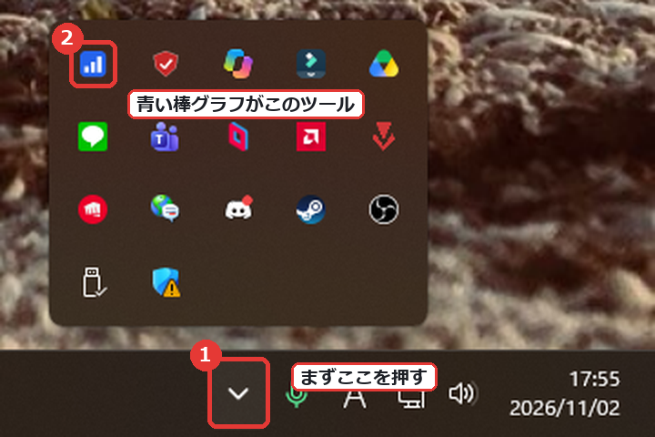
イメージ：画面右下を拡大したところ。並んでいるアイコンの種類や数は人によって違います。
- 時計の左にある「^」を押します（開くと下向きの矢印に変わります）。隠れているアイコンが出てきます。
- その中の青い棒グラフのアイコンがこのツールです。右クリックするとメニューが出ます。
いつでも見えるようにするには
出てきたアイコンを、時計の左側のタスクバーへドラッグすると、いつも表示されるようになります。
アイコンがどこにもないとき
ツールが起動していません。「SubCounter.exe」をもう一度ダブルクリックしてください。
3初期設定をする（最初の 1 回だけ）
ブラウザーに開いた「初期設定」の画面に、上から順に入力します。
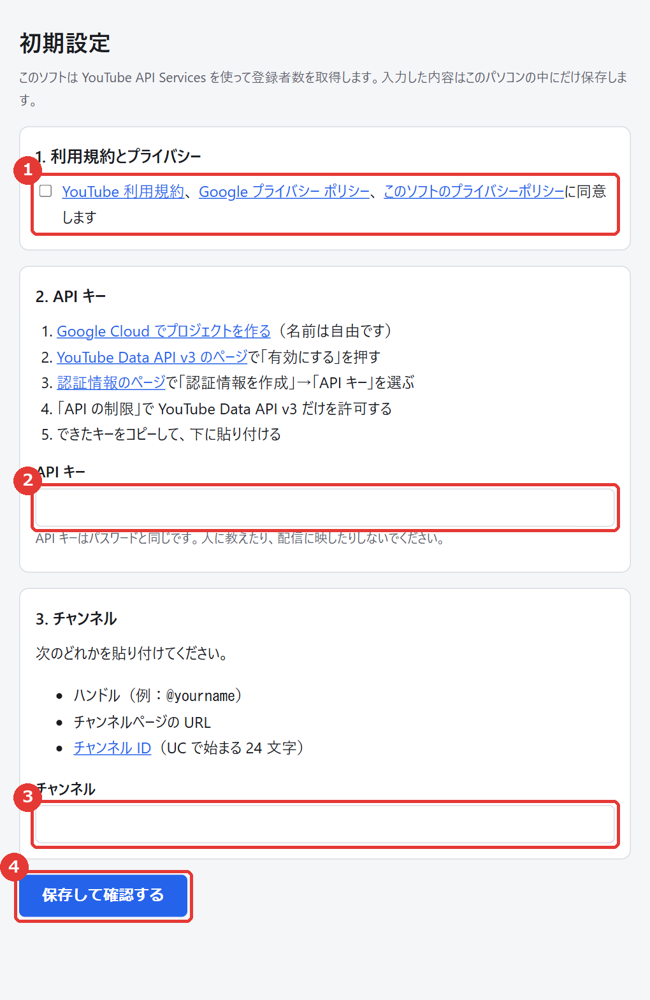
- 同意のチェック
リンク先の利用規約とプライバシーポリシーを確認し、チェックを入れます。
- API キー
Google Cloud で作ったキーを貼り付けます。作り方は次のページで説明します。
- チャンネル
次のどれかを貼り付けます。
- ハンドル（例：
@yourname）
- チャンネルページの URL
- チャンネル ID（UC で始まる 24 文字）
- 「保存して確認する」を押します。
API キーはパスワードと同じです人に教えたり、配信画面に映したりしないでください。
うまくいくと
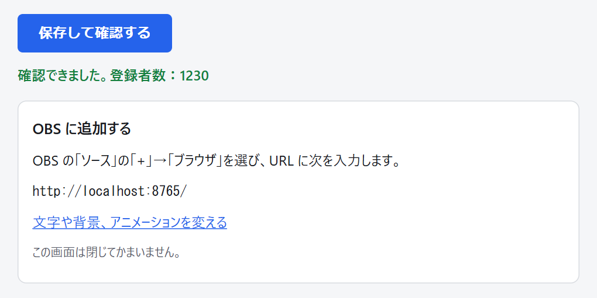
「確認できました。登録者数：○○」と出れば成功です。問題があるときは、ここに理由が表示されるので、その内容を直してもう一度押してください。
3API キーの作り方
API キーは、このツールが YouTube から登録者数を受け取るための「合鍵」です。無料で作れます。
初期設定の画面にある青いリンクから、それぞれのページを直接開けます。
- Google Cloud でプロジェクトを作る
画面の「Google Cloud でプロジェクトを作る」のリンクを開きます。初めての場合は利用規約への同意を求められます。
プロジェクト名は自由です（例：sub-counter）。「作成」を押します。
- YouTube Data API v3 を有効にする
「YouTube Data API v3 のページ」のリンクを開き、「有効にする」を押します。
画面上部のプロジェクト名が、1 で作ったものになっているか確認してください。
- API キーを作る
「認証情報のページ」のリンクを開き、「＋ 認証情報を作成」→「API キー」を選びます。
- キーを制限する（おすすめ）
作ったキーの編集画面の「API の制限」で「キーを制限」を選び、YouTube Data API v3 だけにチェックを入れて保存します。
万一キーが漏れても、ほかの用途に使われにくくなります。
- キーをコピーして貼り付ける
表示されたキー（英数字の長い文字列）をコピーし、初期設定の画面の「API キー」に貼り付けます。
無料枠の範囲で使えますこのツールは 1 分に 1 回だけ数字を確認するので、
1 日中動かしても 1 日の無料枠（10,000 回）の 15% ほどしか使いません。
「YouTube Data API v3」が見つからないとき
Google Cloud の画面上部の検索欄に「YouTube Data API v3」と入力して探してください。
「有効にする」ではなく「管理」と出ていれば、すでに有効になっています。
4OBS に表示する（最初の 1 回だけ）
- OBS の「ソース」欄の下にある「＋」を押します。
- 一覧から「ブラウザ」を選びます。
- 名前に「登録者数」などと入力して「OK」を押します。
- 「URL」欄を次のように書き換えて「OK」を押します。幅と高さはそのままで大丈夫です。
http://localhost:8765/
アイコンを右クリックして「OBS 用の URL をコピー」を選ぶと、この URL をコピーできます。
イメージ
プロパティ「登録者数」
URLhttp://localhost:8765/
幅800高さ600
位置と大きさを調整する
OBS のプレビュー画面で、赤い枠をドラッグして好きな位置に動かします。枠の角を引っぱると大きさが変わり、文字も枠に合わせて拡大・縮小します。
配信画面の右上に置いた例。背景は透明なので、後ろの映像がそのまま見えます。
これで導入は完了です！次は、お好みで文字や背景、アニメーションを変えてみましょう。
5見た目を変える（お好みで）
アイコンを右クリックして「見た目を変える」を選ぶと、ブラウザーで設定の画面が開きます。
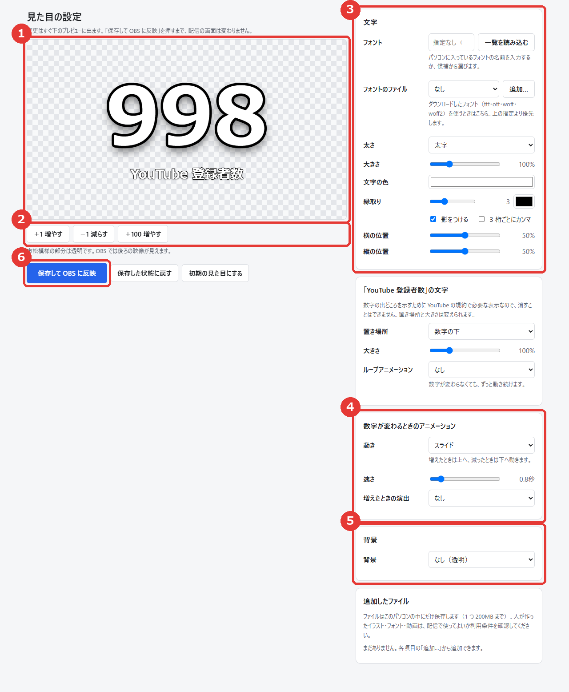
- プレビュー：変更がすぐに映ります。市松模様の部分は透明です。
- 試すボタン：「＋1 増やす」などで、アニメーションを試せます。
- 文字：フォント、色、縁取り、大きさ、位置。「YouTube 登録者数」の置き場所も変えられます
- アニメーション：数字が変わるときの動きと、増えたときの演出
- 背景：透明、単色、画像、動く画像、動画
- 保存：押すと OBS の画面にも反映されます。押すまでは配信に影響しません。
5アニメーションと演出
数字が増えたときは上へ、減ったときは下へ動きます。動きは 7 種類から選べ、速さも変えられます。
スライド 増えたとき ↑
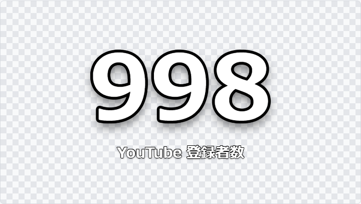
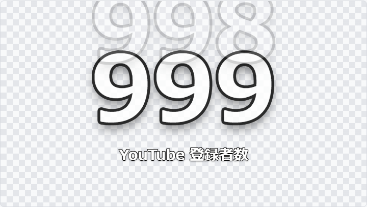
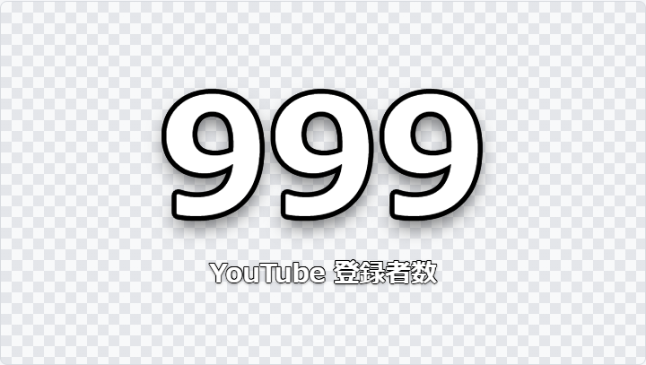
回転（メーター風） 増えたとき ↑

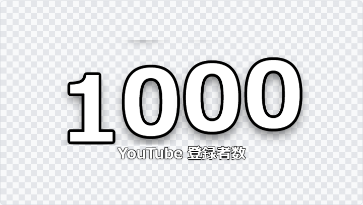
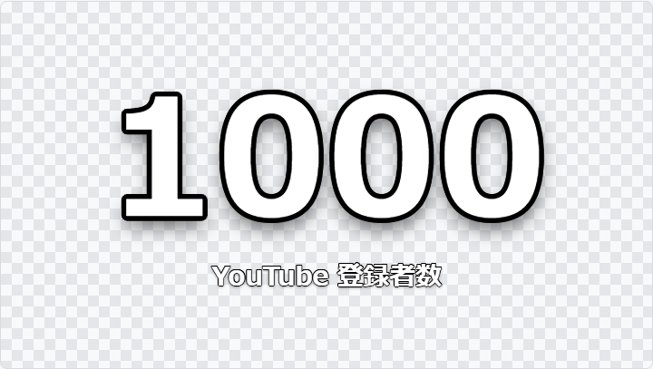
回転（メーター風） 減ったとき ↓

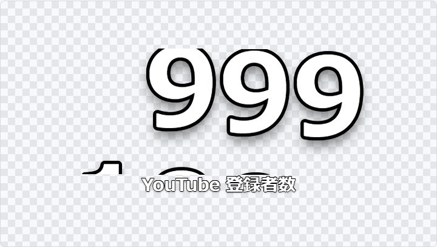
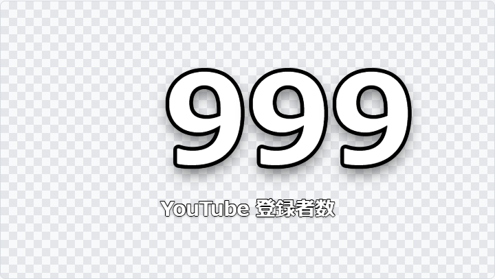
左から「変わる前 → 途中 → 変わった後」
なしすぐに切り替わる
めくり変わった桁がパタンとめくれる
スライド数字全体が入れ替わる
カウントアップ数えながら変わる
回転（メーター風）変わった桁だけが回る
ポップ／バウンド弾む／跳ねる
増えたときの演出
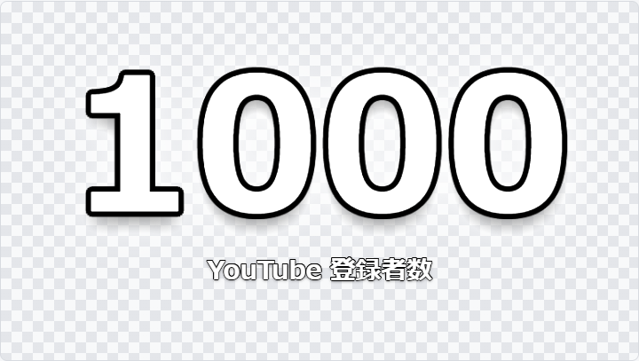
光る
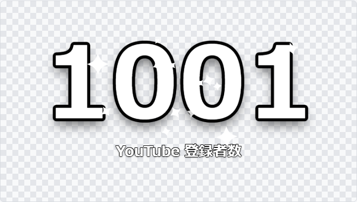
きらきら
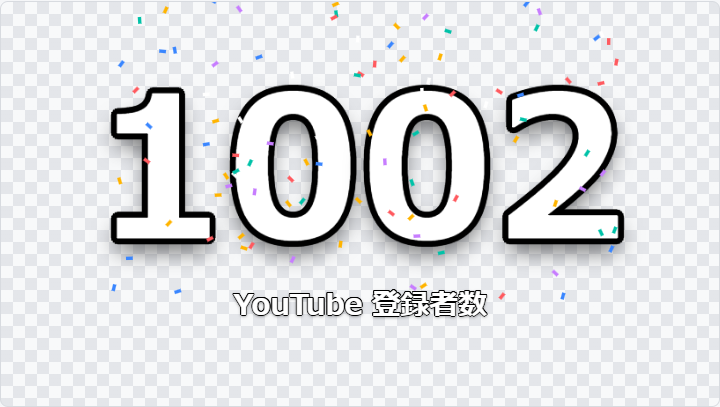
紙吹雪
「自分の画像・動画」を選ぶと、用意した GIF や動画を 1 回だけ画面に重ねられます。
「YouTube 登録者数」の文字のループアニメーション
数字が変わらなくても、文字をずっと動かしておけます。種類と速さ（1 回の動きにかける秒数）を選べます。
ふわふわ上下にゆっくり動く
ゆらゆら左右に傾く
ぴょんぴょん跳ねる
点滅ゆっくり薄くなる
ドキドキ大きく・小さくなる
きらめき明るく光る
5フォントと背景を自分で用意する
フォント
- パソコンに入っているフォント：「フォント」欄に名前を入力するか、候補から選びます。
Chrome や Edge では「一覧を読み込む」でパソコンのフォントをすべて候補にできます。
- ダウンロードしたフォント：「フォントのファイル」の「追加…」から、ttf・otf・woff・woff2 のファイルを選びます。
背景
「背景」で「画像・動画」を選び、「追加…」からファイルを選びます。
| 種類 | 使えるファイル | メモ |
|---|
| 止まった絵 | png・jpg・webp | イラストや写真 |
| 動く絵 | gif・webp・apng | アニメーション画像はそのまま動きます |
| 動画 | webm・mp4 | 音は出ず、繰り返し再生します。OBS では webm が確実です |
「合わせ方」で、画面を覆う・全体を収める・引き伸ばす・並べるを選べます。「濃さ」を下げると半透明になります。
追加したファイルの扱いファイルはこのパソコンの中にだけ保存され、どこにも送信されません。
1 つ 200MB まで追加できます。いらなくなったら、画面下の「追加したファイル」から削除できます。
人が作った素材を使うときはイラスト・フォント・動画には利用条件があります。
配信で使ってよいか（商用・収益化した配信での利用を含めて）、配布元の条件を確認してください。
6毎回の使い方
配信を始めるとき
- 「SubCounter.exe」をダブルクリック
- OBS を起動
配信が終わったら
青いアイコンを右クリックして「終了」を選びます。
ツールを起動していないと、OBS に数字は表示されません。
アイコンのメニュー
| 項目 | 使うとき |
|---|
| 一番上の灰色の文字 | 今の状態。問題があるときは理由が出ます |
| OBS 用の URL をコピー | OBS に URL を貼るとき |
| 見た目を変える | 文字・アニメーション・背景を変えるとき |
| 設定を開く | API キーやチャンネルを変えるとき |
| 今すぐ取得し直す | 設定の問題を直したあと、すぐ再開したいとき |
| ログを開く | 動作の記録を見るとき（問い合わせの際など） |
知っておくと安心なこと
- 数字の確認は 1 分ごとです。YouTube 側の更新にも時間がかかるため、登録されてもすぐには変わらないことがあります。
- 一度数字が表示されたら、インターネットの不調などが起きても配信画面にエラーは出ず、直前の数字を表示し続けます。
- 見た目を保存すると、OBS を触らなくても配信画面に反映されます。
7困ったときは
OBS にこんな表示が出たら
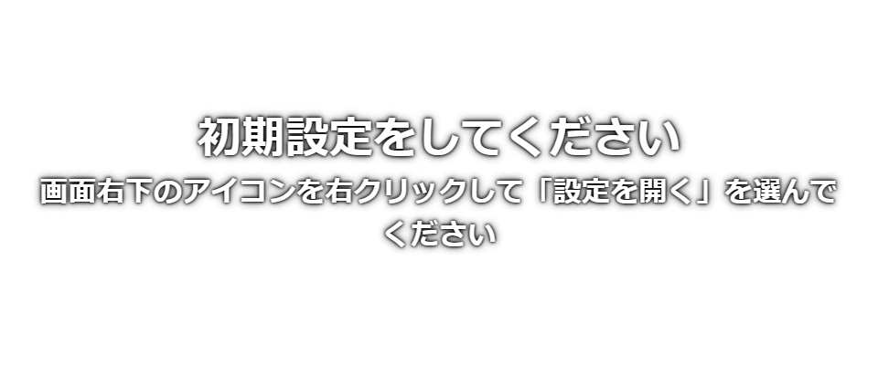
「初期設定をしてください」などの案内
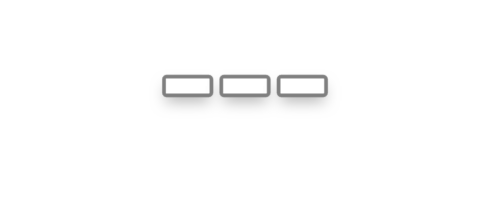
「---」
設定に問題があります。アイコンを右クリックして「設定を開く」を選び、画面の案内どおりに直して保存してください。
インターネットの不調などで、まだ数字を受け取れていません。自動でやり直すので、そのままお待ちください。
- OBS に何も表示されない
- ① 画面右下に青いアイコンがあるか（なければ exe を起動）、② OBS の URL が
http://localhost:8765/ になっているか、
③ OBS のソース一覧で目のマークが消えていないか、を確認してください。
- 「YouTube Data API v3 が有効になっていません」と出た
- 「API キーの作り方」の 2 をやり直し、そのあとアイコンのメニューから「今すぐ取得し直す」を選びます。
- 「登録者数が非公開になっています」と出た
- YouTube Studio の設定で登録者数を公開にしてから、「今すぐ取得し直す」を選びます。
- 「API の 1 日の上限に達しました」と出た
- 無料枠を使い切っています。翌日の 16 時か 17 時（日本時間）に自動で再開します。
- 「すでに起動している可能性があります」と出た
- ツールはすでに動いています。もう一度起動する必要はありません。
- アニメーションや背景が OBS で動かない
- OBS のブラウザソースを右クリックして「再読み込み」を押してください。動画の背景は webm 形式に変えると再生できることがあります。
- 数字が YouTube Studio と違う
- 1,000 人を超えると上から 3 桁より下が切り捨てられる仕様のためです（「始める前に」を参照）。
8削除のしかた・規約について
ツールを削除する
- アイコンのメニューから「終了」を選びます。
- 展開したフォルダーをごみ箱に入れます。
- キーボードの Windows キーと R を同時に押し、
%LOCALAPPDATA% と入力して「OK」を押します。
- 開いたフォルダーの中の「SubCounter」を削除します。設定・追加したファイル・動作の記録がすべて消えます。
- 不要になった API キーは、Google Cloud の「認証情報」の画面で削除してください。
利用規約とプライバシー
- このツールは YouTube API Services を使用しています。使用することで
YouTube 利用規約（
https://www.youtube.com/t/terms）に同意したものとみなされます。
- Google による情報の取り扱いは Google プライバシー ポリシー（
https://policies.google.com/privacy）をご確認ください。
- このツールのプライバシーポリシーは、アイコンのメニューの「利用規約とプライバシー」からいつでも確認できます。
- API キー・チャンネル・見た目の設定はお使いのパソコンの中にだけ保存し、API キーとチャンネル ID は登録者数を受け取るために Google にだけ送信します。
- 配信画面に出る「YouTube 登録者数」の表記は、データの出どころを示すために必要なので消せません。
- 同梱しているソフトウェアのライセンスは、フォルダー内の「サードパーティライセンス.txt」にあります。
お問い合わせ・最新情報
不具合の報告やご質問は、次のページの「Issues」からお願いします（GitHub のアカウントが必要です）。
書き込んだ内容は公開されるので、API キーは書かないでください。
https://github.com/hattyan23/Sub_counter
最新のプライバシーポリシーも、このページの「PRIVACY.md」で公開しています。